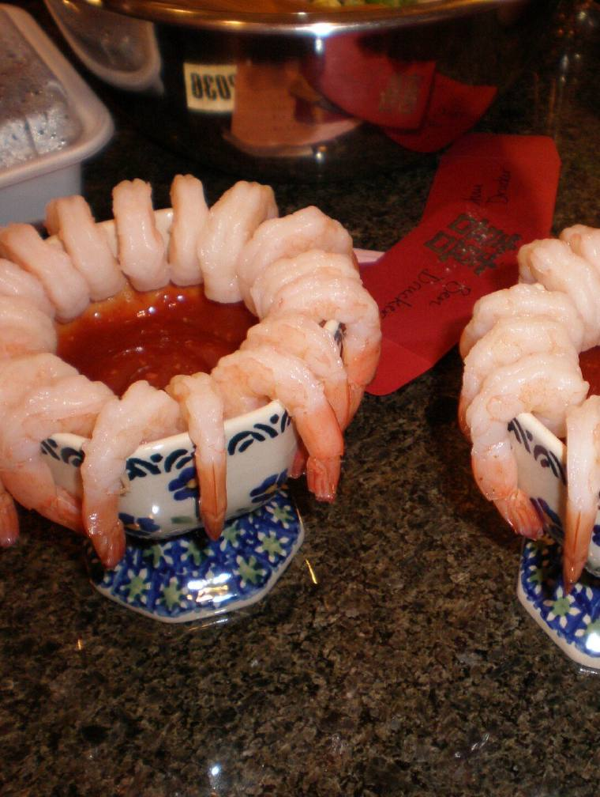

Sauces

Sauces
Sauce cocktail
Préparation : 5 min
Ingrédients (pour 2 personnes)
- 3 cuillères à soupe de mayonnaise
- 1 cuillère à soupe de ketchup
- 1 cuillère à café de raifort (facultatif)
- un trait de cognac
- tabasco, sel
Quantités adaptées. Les temps de cuisson ne sont pas recalculés.
- Mélanger mayonnaise et ketchup.
- Ajouter raifort, cognac et tabasco, goûter, saler si besoin.
- Garder au froid jusqu’au service.
À conserver au froid, jamais au placard
Au réfrigérateur entre 0 et 4 °C : 24 heures au plus. Ne pas congeler. Œuf cru : préparer au plus près du repas, jamais pour les jeunes enfants, femmes enceintes, personnes âgées ou fragiles, sauf avec de l’œuf pasteurisé.
AstuceLa compagne des crevettes, du homard et des salades tropicales.
D’après une recette du Marine Stewardship Council. Sauce seule, texte reformulé.